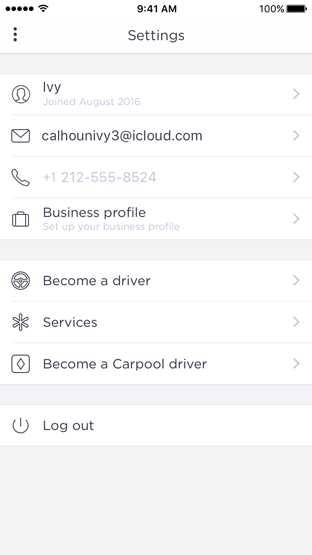

Settings 设置


有一部分的应用可能需要一开始就让用户决定设置或布局选项，但是大部分应用避免或是延迟这么做。成功的应用能够一开始就让用户很好地使用，并且同时提供了一个便捷的途径去调整体验。当你的应用被设计成满足大部分用户的需求，你就可以减少他们对对设置的需要。
推断你可以从系统中得到什么（Infer what you can from the system.）。如果你需要关于用户、设备或是环境的信息，那么尽可能地向系统请求而不是直接询问用户。比如，如果你想要知道用户的邮编来提供本地的选项时，可以向用户请求获取他们的当前位置。
在你的应用中对配置选项的优先排序深思熟虑（Thoughtfully prioritize configuration options within your app. ）。应用的主屏是一个放置关键或是常用选项的绝佳位置。次屏则适合放置只偶尔才更改的选项。
适当时提供去设置的快捷路径（Provide shortcuts to Settings when appropriate.）。如果你的应用包含引导用户去设置的文本，比如“去设置>我的应用>隐私>定位服务”，请提供一个能够自动打开该界面的按钮。了解如果实现这个行为，请参阅UIApplication 中的Settings Launch URL部分。
把不经常更改的配置选项放到系统设置里（Expose infrequently changed configuration options in Settings.）。系统的设置（Settings）应用是更改系统配置的核心地带，但是用户必须离开的应用才能到达那里。因此在你的应用中直接调节设置更加方便。如果你的应用必须提供很少改动的设置选项，请参阅Preferences and Settings Programming Guide中的Implementing an iOS Settings Bundle 部分。
